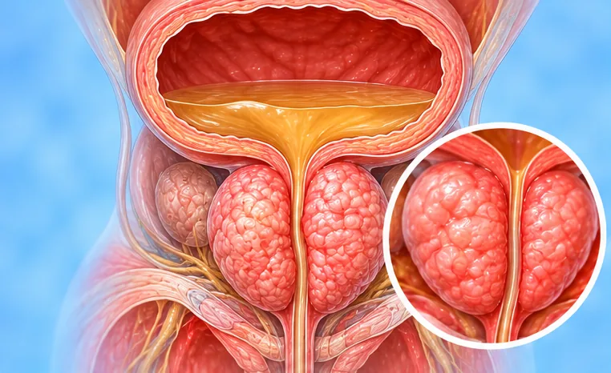
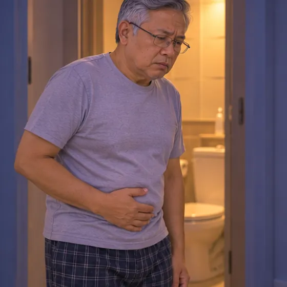

Pembesaran prostat
Kelenjar prostat membesar seiring usia dan memperlambat aliran urine
Apa itu
Prostat, kelenjar kecil di bawah kandung kemih, perlahan membesar seiring bertambahnya usia pria. Prostat bisa menjepit saluran kemih, sehingga buang air kecil menjadi lambat atau sering.
- Di bawah kandung kemih
- Pria lanjut usia
- Buang air kecil lambat dan sering
- Dokter yang dituju
- Dokter umum; dokter spesialis urologi
- Sering pada
- Pria dari usia paruh baya ke atas, makin umum pada usia yang lebih tua
- Menular
- Tidak
- Perjalanan
- Biasanya membesar perlahan selama bertahun-tahun; dokter dapat menjelaskan pilihan yang ada
Tanda umum

Pancaran lemah atau sulit mulai buang air kecilGejala saluran kemih bawah 
Sering ke toiletSering buang air kecil
Tanda lain
- Harus menunggu atau mengejan sebelum urine keluar
- Merasa kandung kemih belum kosong setelah buang air kecil
- Dorongan kuat dan mendadak untuk buang air kecil
Mengapa terjadi

Bertambah usiaPenuaan 
Faktor keturunanFaktor keturunan
Penyebab lain
- Perubahan hormon seiring bertambahnya usia pria
- Kelebihan berat badan atau diabetes mungkin meningkatkan kemungkinannya
Periksa ke dokter lebih dulu jika
- Sama sekali tidak bisa buang air kecil, atau perut bawah bengkak dan nyeri: ke rumah sakit sekarang
- Demam, menggigil, atau perih saat buang air kecil
- Urine berdarah
- Nyeri di punggung, pinggul, atau samping badan, atau berat badan turun tanpa sebab
- Urine menetes terus-menerus atau pancarannya jauh lebih lemah
Jika ada yang sesuai, silakan periksa ke dokter sebelum sesi.
Halaman ini berisi informasi umum. Tetap minum obat Anda seperti biasa dan tetap kontrol ke dokter.
Tetap minum obat Anda seperti biasa dan tetap kontrol ke dokter. Sesi kami adalah dukungan yang lembut dan tidak menggantikan perawatan medis.
Merawat diri

Kontrol rutin ke dokterKontrol medis rutin 
Kurangi kopi dan tehKurangi kafein 
Tetap aktif setiap hariAktivitas fisik teratur 
Tanyakan kepada apotekerSaran apoteker
Cara lain merawat diri
- Luangkan waktu agar kandung kemih kosong sepenuhnya saat buang air kecil
Beri tahu terapis Anda
- Diabetes atau kulit kurang berasa
- Tekanan darah tinggi
- Masalah jantung
- Obat pengencer darah
- Alat pacu jantung atau implan logam
Terapis akan membahasnya bersama Anda sebelum mulai.
Tanya jawab
Apa itu Pembesaran prostat?
Kelenjar prostat membesar seiring usia dan memperlambat aliran urine. Prostat, kelenjar kecil di bawah kandung kemih, perlahan membesar seiring bertambahnya usia pria. Prostat bisa menjepit saluran kemih, sehingga buang air kecil menjadi lambat atau sering.
Apa saja tanda umum Pembesaran prostat?
Pancaran lemah atau sulit mulai buang air kecil · Sering ke toilet
Mengapa Pembesaran prostat terjadi?
Bertambah usia · Faktor keturunan
Bagaimana merawat diri saat mengalami Pembesaran prostat?
Kontrol rutin ke dokter · Kurangi kopi dan teh · Tetap aktif setiap hari · Tanyakan kepada apoteker
Apakah sesi AI Body Master bisa membantu Pembesaran prostat?
Sesi ini adalah dukungan meridian yang lembut tanpa jarum untuk kebugaran Anda. Sesi ini bukan pengobatan untuk Pembesaran prostat dan tidak menggantikan obat atau dokter Anda. Beri tahu terapis Anda sebelum sesi dimulai.
Kondisi terkait
- TBC epididimis (TB)
- Epididimitis
- Radang vesikula seminalis (vesikulitis)
- Varikokel
- Air mani tidak mencair
- Epididimitis akut (radang saluran di belakang testis)
- Sperma berbentuk tidak normal (teratozoospermia)
- Infeksi prostat akut (prostatitis bakteri)
- Kanker kandung kemih
- Kandung kemih terlalu aktif
- Kanker kandung kemih sel campuran
- Batu kandung kemih
Referensi: General information based on public health sources such as Mayo Clinic, NHS, Cleveland Clinic and NCBI StatPearls.
Halaman diperbarui: 2026-11-09